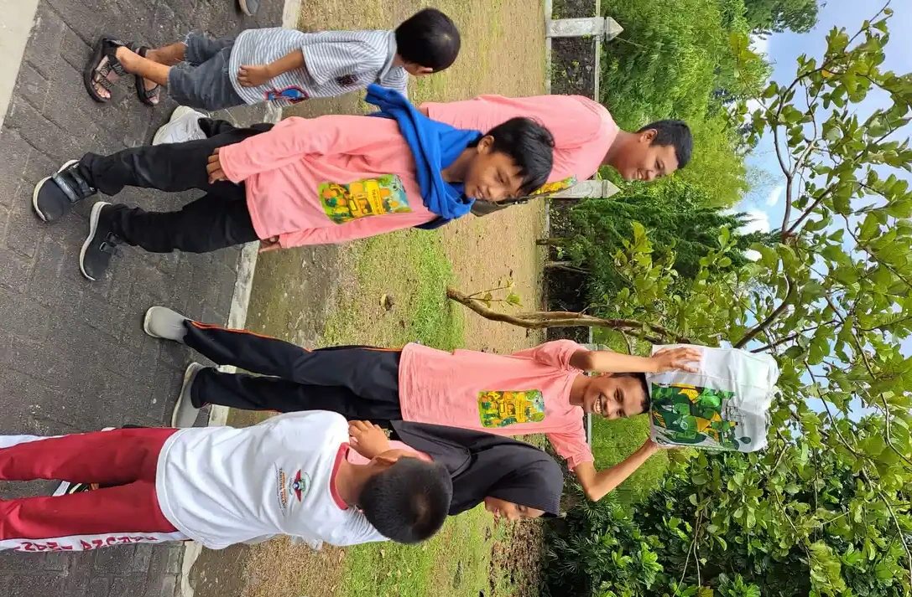
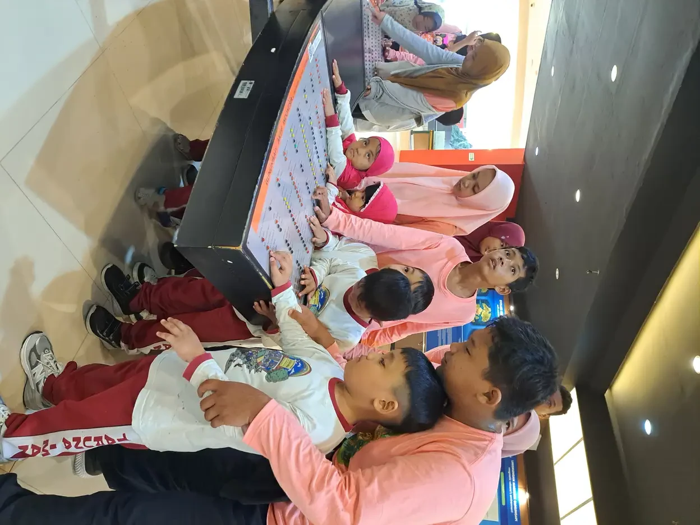
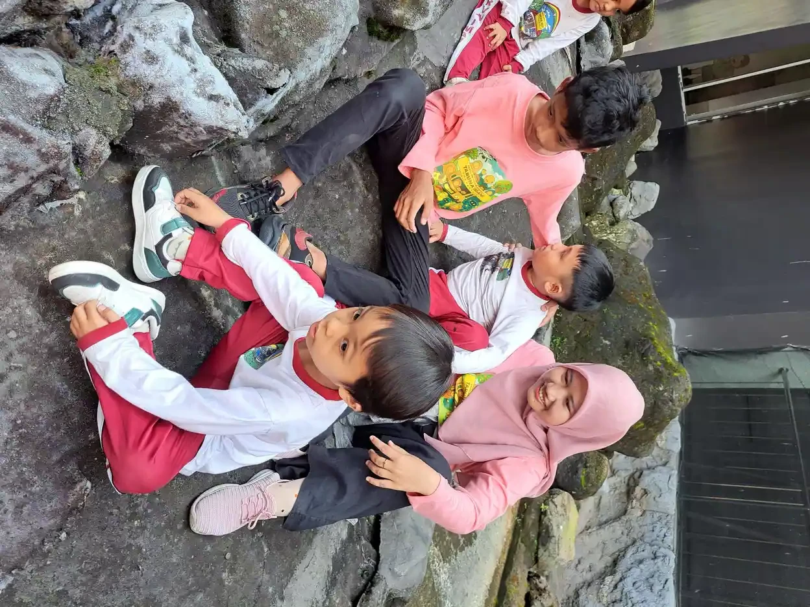
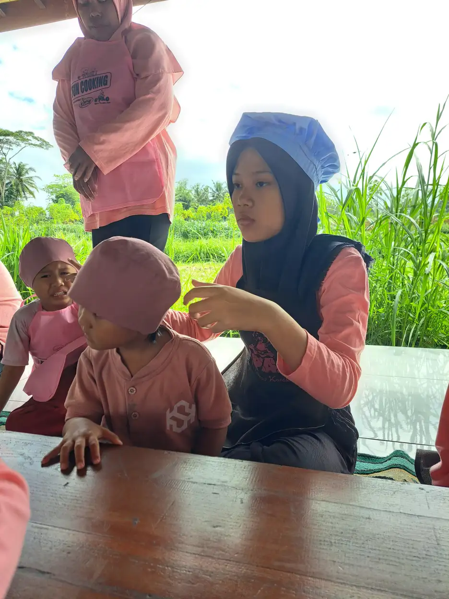

Jawaban singkat: anak aktif dan anak hiperaktif sama-sama banyak bergerak, tetapi berbeda pada tiga hal. Gerak anak aktif biasanya punya tujuan, ia masih bisa berhenti atau menunggu bila diminta, dan energinya menyesuaikan tempat. Pola hiperaktif tampak sebaliknya: gerak sulit dikendalikan, muncul di banyak tempat, menetap berbulan-bulan, dan mulai mengganggu belajar, pergaulan, atau keselamatan anak. Hanya tenaga profesional yang dapat menilai apakah pola itu termasuk ADHD.
Daftar Isi
- Perbedaan utama anak aktif dan hiperaktif
- Aktif sesuai usia: apa yang wajar
- Tanda yang perlu dicek lebih jauh
- Hal lain yang membuat anak tampak hiperaktif
- Cara mengamati dan mencatat perilaku
- Kapan dan ke mana berkonsultasi
- Hubungan hiperaktif dengan ADHD
- Sikap yang membantu sambil menunggu
- Pertanyaan yang sering diajukan
Perbedaan utama anak aktif dan anak hiperaktif
Banyak orang tua bertanya hal yang sama: anak saya hanya aktif, atau memang hiperaktif? Pertanyaan ini wajar karena keduanya tampak mirip dari luar. Anak sama-sama berlari, memanjat, banyak bicara, dan cepat bosan. Bedanya baru terlihat bila kita memperhatikan kualitas geraknya, bukan hanya jumlahnya.
Kemenkes melalui Ditjen Kesehatan Lanjutan memberi gambaran yang mudah dipakai. Dibandingkan anak yang aktif tetapi produktif, perilaku hiperaktif tampak tidak bertujuan. Anak kesulitan mengendalikan dan mengoordinasikan gerak, sehingga sulit memilah gerakan yang penting dan yang tidak. Anak aktif yang memanjat pohon biasanya ingin mengambil sesuatu atau menguji kemampuannya. Anak dengan pola hiperaktif bisa berpindah dari satu kegiatan ke kegiatan lain tanpa menyelesaikan apa pun.
Hal kedua adalah kemampuan berhenti. Anak aktif umumnya masih bisa diminta duduk sebentar saat makan, mendengarkan cerita pendek, atau menunggu giliran, walau perlu diingatkan. Pada pola hiperaktif, permintaan yang sama berulang kali gagal meski anak sebenarnya ingin menurut. Hal ketiga adalah konteks. Anak aktif biasanya lebih tenang di tempat yang menuntut tenang, misalnya masjid atau ruang tunggu dokter. Pola hiperaktif cenderung terbawa ke mana pun anak berada.
| Aspek yang diamati | Anak aktif sesuai usia | Pola yang perlu dicek lebih jauh |
|---|---|---|
| Tujuan gerak | Gerak terarah pada mainan, permainan, atau tugas tertentu | Gerak tampak tanpa tujuan, berpindah-pindah tanpa menyelesaikan kegiatan |
| Kemampuan berhenti | Bisa berhenti atau menunggu sebentar bila diminta | Sering gagal berhenti walau sudah diingatkan berulang kali |
| Tempat | Lebih tenang di tempat yang menuntut tenang | Pola serupa muncul di rumah, sekolah, dan tempat lain |
| Lama berlangsung | Naik turun mengikuti suasana hati, lelah, atau acara tertentu | Menetap dan teratur selama berbulan-bulan |
| Dampak | Belajar dan pertemanan tetap berjalan | Belajar tertinggal, sering bertengkar, atau dijauhi teman |
| Keselamatan | Masih memperhatikan bahaya setelah diberi tahu | Sering celaka karena bertindak tanpa berpikir |
Tabel ini alat bantu pengamatan, bukan alat diagnosis. Satu atau dua baris yang cocok dengan kolom kanan belum berarti anak hiperaktif. Yang penting adalah gambaran keseluruhan selama beberapa waktu.

Aktif sesuai usia: apa yang wajar
Anak memang dirancang untuk bergerak. Balita belajar tentang tubuh dan lingkungannya lewat berlari, melompat, memanjat, dan menyentuh apa saja. Rasa ingin tahu yang besar membuat mereka cepat berpindah dari satu benda ke benda lain. Pada usia ini, sulit duduk lama adalah hal yang sangat umum, bukan tanda gangguan.
CDC menegaskan bahwa wajar bila anak sesekali kesulitan fokus dan mengatur perilaku. American Academy of Pediatrics (AAP) juga mengingatkan bahwa semua anak normal menunjukkan sebagian perilaku yang mirip gejala ADHD dari waktu ke waktu. Seiring bertambahnya usia, kemampuan anak menunggu, mengikuti aturan, dan menyelesaikan tugas biasanya ikut berkembang, walau kecepatannya berbeda pada tiap anak.
Karena itu, bandingkan anak dengan teman sebayanya, bukan dengan kakaknya atau anak tetangga yang lebih besar. Anak usia empat tahun yang tidak betah duduk mendengarkan cerita panjang belum tentu bermasalah. Anak usia sembilan tahun yang sama sekali tidak bisa duduk menyelesaikan satu lembar tugas sekolah, padahal teman sekelasnya bisa, lebih layak diamati. Artikel ciri-ciri anak ADHD berdasarkan usia membahas perbedaan ini per tahap umur.
Perhatikan juga hal yang membuat anak justru bisa fokus. Banyak anak aktif dapat bermain balok, menggambar, atau mendengarkan cerita favoritnya cukup lama. Kemampuan ini menunjukkan bahwa ia sebenarnya mampu mengatur perhatian bila kegiatannya menarik. Informasi seperti ini berguna saat Anda berbicara dengan dokter atau psikolog nanti.
Tanda yang membuat orang tua perlu mengecek lebih jauh
Ada beberapa pola yang membuat pengamatan lebih serius layak dilakukan. Pola ini tidak mendiagnosis apa pun, tetapi menjadi alasan untuk berkonsultasi. AAP menyarankan orang tua membicarakannya dengan dokter anak bila gejala muncul secara teratur selama lebih dari 6 bulan. CDC menyebut contoh gejala hiperaktif dan impulsif seperti sering menggeliat atau gelisah dan berbicara terlalu banyak.
- Perilaku sulit diam dan sulit menunggu muncul hampir setiap hari, bukan hanya saat lelah atau sedang ada acara.
- Pola yang sama terlihat di rumah, di sekolah, dan di tempat lain, menurut beberapa orang dewasa yang berbeda.
- Guru berulang kali menyampaikan bahwa anak sulit mengikuti kegiatan kelas dibanding teman sebayanya.
- Anak sering celaka, misalnya berlari ke jalan atau memanjat tempat berbahaya, walau sudah sering diingatkan.
- Anak mulai dijauhi teman karena sering menyela, merebut giliran, atau sulit mengikuti aturan permainan.
- Anak sendiri tampak frustrasi, merasa dirinya nakal, atau sering dimarahi sampai kehilangan rasa percaya diri.
Bila satu tanda saja sudah membahayakan keselamatan, jangan menunggu enam bulan. Konsultasikan lebih cepat. Untuk gambaran tanda awal yang lebih rinci, baca juga hiperaktif artinya apa, yang membahas empat hal utama yang perlu diamati.

Hal lain yang bisa membuat anak tampak hiperaktif
Tidak semua anak yang tampak sangat aktif mengalami ADHD. AAP menjelaskan bahwa anak bisa sedang bereaksi terhadap stres di sekolah atau di rumah, merasa bosan, atau sedang melewati masa sulit dalam hidupnya. Kepindahan rumah, kelahiran adik, perpisahan orang tua, atau perundungan di sekolah dapat mengubah perilaku anak dalam waktu singkat.
Tidur juga perlu diperhatikan. NIMH menyebut tidur sebagai salah satu sasaran penting dalam intervensi dini ADHD. Dalam keseharian, orang tua sering mendapati anak yang kurang tidur justru tampak lebih gelisah dan mudah meledak, bukan mengantuk. Catat jam tidur dan bangun anak selama beberapa minggu. Pembahasan lebih lengkap ada di gangguan tidur pada anak ADHD.
Kondisi lain seperti gangguan belajar, gangguan kecemasan, atau gangguan perkembangan tertentu dapat menimbulkan perilaku yang mirip. Inilah alasan penilaian profesional penting: dokter atau psikolog akan mempertimbangkan berbagai kemungkinan sebelum menyimpulkan. Proses membedakan kondisi yang mirip ini disebut diagnosis banding, dan dijelaskan dalam artikel diagnosis banding ADHD. Untuk perbedaan dengan autisme, lihat perbedaan autis dan ADHD.
Cara mengamati dan mencatat perilaku anak
Catatan yang rapi membantu orang tua melihat pola dengan lebih jernih, dan membantu profesional menilai lebih cepat. AAP menjelaskan bahwa orang tua dapat diminta mengisi daftar periksa atau skala penilaian tentang perilaku anak, dan guru dapat diminta memberikan laporan tentang perilaku di kelas serta pola belajar. Jadi, catatan yang Anda buat sendiri akan sangat berguna.
Pakai buku kecil atau catatan di ponsel. Tidak perlu rumit. Yang penting dicatat secara jujur dan rutin, termasuk hari-hari ketika anak justru tampak tenang. Catatan yang hanya berisi hari buruk akan memberi gambaran yang berat sebelah.
| Yang dicatat | Contoh catatan singkat |
|---|---|
| Waktu dan tempat | Senin, 18.30, saat makan malam di rumah |
| Apa yang terjadi sebelumnya | Baru pulang dari acara keluarga, belum tidur siang |
| Perilaku yang terlihat | Berdiri dari kursi lima kali, menumpahkan minum, tidak menghabiskan makan |
| Respons orang dewasa | Diingatkan dengan suara pelan, lalu diberi tugas membawa piring |
| Hasilnya | Bisa duduk lagi sekitar lima menit setelah diberi tugas |
Mintalah guru atau pengasuh mencatat hal yang sama selama periode yang sama. Bandingkan catatan dari beberapa tempat. Bila pola hanya muncul di satu tempat, misalnya hanya di rumah, kemungkinan pemicunya ada di lingkungan itu. Bila muncul di mana-mana, informasi ini penting untuk disampaikan ke profesional.

Kapan dan ke mana berkonsultasi
Bila tanda di atas menetap atau perilaku anak mulai mengganggu keseharian, mulailah dari dokter anak atau layanan kesehatan terdekat. Dokter akan menanyakan riwayat perkembangan, kesehatan, dan perilaku anak, lalu bila perlu merujuk ke psikolog anak, psikiater anak, atau dokter spesialis tumbuh kembang. Kemenkes menyebut psikoterapi untuk ADHD dapat dilakukan oleh psikiater atau psikolog.
Pedoman yang dijelaskan AAP menyebut beberapa syarat penting dalam penilaian ADHD: gejala muncul di dua tempat atau lebih seperti rumah, sekolah, dan situasi sosial, dan menimbulkan hambatan; gejala dimulai sebelum anak berusia 12 tahun; dan gejala sudah berlangsung lebih dari 6 bulan. Syarat ini menjelaskan mengapa satu kali pertemuan singkat jarang cukup untuk menyimpulkan.
Siapkan bahan sebelum berangkat: catatan perilaku, laporan atau pesan dari guru, buku rapor bila ada, dan daftar pertanyaan Anda. Alur pemeriksaan di Indonesia, termasuk siapa yang biasanya terlibat, dijelaskan dalam diagnosis ADHD di Indonesia. Bila Anda berada di Sleman atau Yogyakarta, halaman konsultasi ABK di Sleman memuat cara menghubungi tim YUKA untuk bertanya soal pendampingan pendidikan.
Hubungan hiperaktif dengan ADHD
Kata hiperaktif sering dipakai sehari-hari untuk menggambarkan anak yang sangat aktif. Dalam dunia kesehatan, hiperaktivitas adalah salah satu kelompok gejala ADHD (Attention Deficit Hyperactivity Disorder), bersama kesulitan memusatkan perhatian dan impulsivitas. AAP menjelaskan ada anak yang terutama menunjukkan perilaku hiperaktif dan impulsif, ada yang terutama sulit memusatkan perhatian, dan ada yang menunjukkan gabungan keduanya.
Artinya, anak yang hiperaktif belum tentu ADHD, dan anak ADHD belum tentu tampak hiperaktif. Seri artikel hiperaktif YUKA berfokus pada perilaku sehari-hari dan cara mendampinginya. Sementara itu, artikel ADHD adalah berfokus pada sisi klinis: kriteria, pemeriksaan, dan pilihan terapi. Pembagian ini membantu orang tua menemukan informasi yang tepat sesuai kebutuhan.
Bila Anda ingin memahami istilah hiperaktif secara menyeluruh, mulai dari pengertian sampai penanganan, baca panduan utama hiperaktif adalah. Untuk kepanjangan dan arti singkatan ADHD, ada artikel ADHD singkatan dari apa.

Sikap yang membantu sambil menunggu penilaian
Apa pun hasil penilaian nanti, beberapa langkah aman bisa dimulai sekarang. CDC menjelaskan bahwa pelatihan orang tua mengajarkan keterampilan yang memakai penguatan positif, struktur, dan disiplin yang konsisten. Prinsip ini berguna untuk semua anak, termasuk anak yang ternyata hanya sangat aktif.
- Buat rutinitas harian yang sama setiap hari, terutama jam bangun, makan, belajar, dan tidur.
- Beri instruksi singkat satu per satu sambil menatap mata anak, lalu minta ia mengulanginya.
- Puji perilaku yang Anda harapkan secara spesifik, misalnya "Terima kasih sudah duduk sampai makanan habis."
- Sediakan waktu bergerak yang cukup setiap hari, misalnya bermain di luar atau bersepeda.
- Kurangi pemicu seperti suara televisi yang terus menyala saat anak belajar.
- Hindari melabeli anak sebagai nakal di depan orang lain. Label seperti itu mudah melekat dan melukai.
Strategi yang lebih lengkap untuk rumah dan sekolah dibahas dalam cara mengatasi anak hiperaktif di rumah dan sekolah. Untuk langkah demi langkah dari sudut pandang orang tua, baca anakku hiperaktif. Mendampingi anak yang sangat aktif juga melelahkan. Jaga diri Anda dengan bantuan artikel mengelola stres orang tua.
Sekolah juga bisa menjadi mitra. Di sekolah inklusi, guru terbiasa menyesuaikan cara mengajar dengan kebutuhan tiap anak. Informasi tentang layanan pendidikan YUKA ada di halaman Sekolah Inklusi Taruna Imani di Sleman.
- Hiperaktif adalah: pengertian, ciri, dan penanganan (panduan utama)
- Hiperaktif artinya apa dan tanda awalnya
- Anakku hiperaktif: panduan langkah untuk orang tua
- Cara mengatasi anak hiperaktif di rumah dan sekolah
Seri ini membahas perilaku hiperaktif sehari-hari. Untuk sisi diagnosis klinis, baca ADHD adalah dan alur diagnosis ADHD di Indonesia.
Pertanyaan yang Sering Diajukan
Apa beda anak aktif dan anak hiperaktif?
Anak aktif bergerak banyak tetapi geraknya punya tujuan, ia masih bisa berhenti saat diminta, dan energinya menyesuaikan tempat. Pada perilaku hiperaktif, Kemenkes menggambarkan gerakan yang tampak tidak bertujuan dan sulit dikendalikan. Perbedaan paling jelas biasanya terlihat dari seberapa sering perilaku itu mengganggu belajar, pergaulan, dan keselamatan anak.
Apakah anak yang tidak bisa diam pasti hiperaktif?
Tidak. CDC menyebut wajar bila anak sesekali sulit fokus dan sulit mengatur perilaku. AAP juga mengingatkan bahwa anak bisa tampak gelisah karena stres di rumah atau sekolah, bosan, atau sedang melewati masa sulit. Label hiperaktif baru masuk akal bila polanya menetap, muncul di beberapa tempat, dan mengganggu keseharian.
Berapa lama perilaku harus diamati sebelum ke dokter?
AAP menyarankan orang tua membicarakannya dengan dokter anak bila gejala muncul secara teratur selama lebih dari 6 bulan. Namun, orang tua tidak perlu menunggu selama itu bila perilaku anak sudah membahayakan keselamatan atau membuat anak sangat kesulitan di sekolah. Catatan pengamatan sejak awal tetap berguna saat konsultasi.
Apakah anak aktif sejak bayi berarti hiperaktif?
Kemenkes menulis bahwa aktivitas berlebihan pada sebagian anak dapat tampak sejak bayi, berupa banyak gerakan dan sulit ditenangkan. Meski begitu, banyak bayi dan balita memang sangat aktif dan tetap berkembang wajar. Penilaian dilakukan tenaga profesional dengan melihat perkembangan anak secara utuh, bukan satu tanda saja.
Siapa yang bisa menilai apakah anak hiperaktif?
Mulailah dari dokter anak atau layanan kesehatan terdekat. Bila perlu, anak dirujuk ke psikolog anak, psikiater anak, atau dokter spesialis tumbuh kembang. Kemenkes menyebut psikoterapi untuk ADHD dapat dilakukan oleh psikiater atau psikolog. Bawa catatan perilaku dan laporan guru agar penilaian lebih lengkap.
Apakah hiperaktif sama dengan ADHD?
Tidak selalu. Hiperaktif adalah gambaran perilaku, sedangkan ADHD adalah diagnosis klinis yang ditetapkan dengan kriteria tertentu. AAP menjelaskan antara lain bahwa gejala ADHD muncul di dua tempat atau lebih, dimulai sebelum usia 12 tahun, dan berlangsung lebih dari 6 bulan. Anak yang sangat aktif belum tentu memenuhi kriteria itu.
Apa yang sebaiknya dilakukan sambil menunggu konsultasi?
Buat rutinitas harian yang konsisten, beri instruksi singkat satu per satu, puji perilaku yang Anda harapkan, dan sediakan waktu bergerak yang cukup. CDC menyebut keterampilan yang memakai penguatan positif, struktur, dan disiplin yang konsisten sebagai inti pelatihan orang tua. Langkah ini aman dilakukan apa pun hasil penilaian nanti.
Apakah gula atau pewarna makanan membuat anak hiperaktif?
Pedoman NICE tidak menganjurkan penghapusan pewarna dan bahan tambahan buatan dari makanan sebagai penanganan umum bagi anak dengan ADHD. NICE meminta tenaga kesehatan menanyakan makanan atau minuman yang tampak memengaruhi perilaku anak. Jadi, bila Anda melihat pola tertentu, catat dan diskusikan dengan dokter, jangan langsung membuat diet ketat sendiri.
Bacaan Terkait
Tentang artikel ini
- Ditulis oleh: Tim YUKA (Yayasan Ukhuwah Kaffah Amanatullah), pengelola Sekolah Inklusi Taruna Imani, Sleman, Yogyakarta.
- Dasar rujukan: keslan.kemkes.go.id, cdc.gov, healthychildren.org, nimh.nih.gov, nice.org.uk. Semua rujukan ditautkan langsung di bagian sumber di bawah artikel ini.
- Terbit: 11 Oktober 2026. Pembaruan terakhir: 11 Oktober 2026.
- Status tinjauan medis: artikel ini disusun oleh tim pendidik, belum ditinjau oleh dokter berlisensi. Tinjauan oleh tenaga medis berkredensial sedang kami siapkan dan status ini akan diperbarui di halaman ini begitu selesai. Alur tinjauan dan koreksi dijelaskan di Kebijakan Editorial YUKA. Untuk keputusan diagnosis atau terapi, rujuklah pada dokter anak, psikiater anak, atau psikolog perkembangan.
- Kebijakan koreksi: jika Anda menemukan klaim yang keliru atau sumber yang tidak cocok, beri tahu kami lewat halaman kontak. Kami memperbaiki isinya dan mencantumkan catatan koreksi secara terbuka.
Sumber dan Referensi
- Kemenkes, Ditjen Kesehatan Lanjutan: Apa Itu ADHD (Attention Deficit Hyperactivity Disorder)
- CDC: Symptoms of ADHD
- American Academy of Pediatrics (HealthyChildren.org): Understanding ADHD, Information for Parents
- American Academy of Pediatrics (HealthyChildren.org): Diagnosing ADHD in Children, Guidelines and Information for Parents
- CDC: ADHD Treatment Recommendations, Behavior Therapy
- National Institute of Mental Health (NIMH): Attention-Deficit/Hyperactivity Disorder
- NICE Guideline NG87: Attention deficit hyperactivity disorder, diagnosis and management (Recommendations)
Catatan: Artikel ini bersifat edukasi umum dan bukan pengganti konsultasi dengan psikolog, tenaga kesehatan, atau petugas layanan sosial resmi. Sumber resmi diperiksa pada 11 Oktober 2026. Ringkasan ini membantu orang tua dan guru mengamati perilaku anak, tetapi tidak dapat dipakai untuk menetapkan diagnosis.